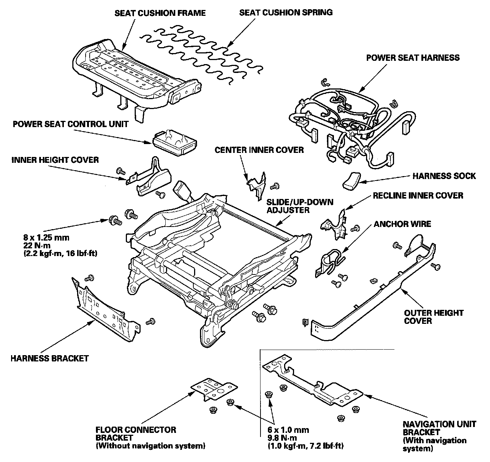
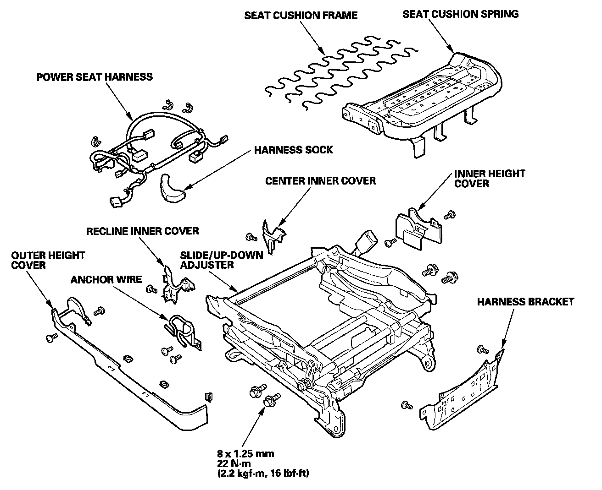

Front Seat Linkage
Front Seat Linkage Disassembly/ReassemblySRS components are located in this area. Review the SRS component locations and the precautions and procedures before doing repairs or service.
Driver's Seat
- Check the operation of the driver's seat position sensor after any of these actions
- Driver's seat position sensor replacement
- Cover plate (front side of driver's seat slide rail) replacement

NOTE:
- Put on gloves to protect your hands.
- Apply multipurpose grease to the sliding portions and pivot portions of the seat tracks.
SRS components are located in this area. Review the SRS component locations and the precautions and procedures before doing repairs or service.
Passenger's Seat
- Calibrate the ODS unit after any of these actions
- Front passenger's seat replacement (including any seat components)
- Replacement of the seat weight sensors
- Replacement of the ODS unit

NOTE:
- Put on gloves to protect your hands.
- Apply multipurpose grease to the sliding portions of the seat tracks.